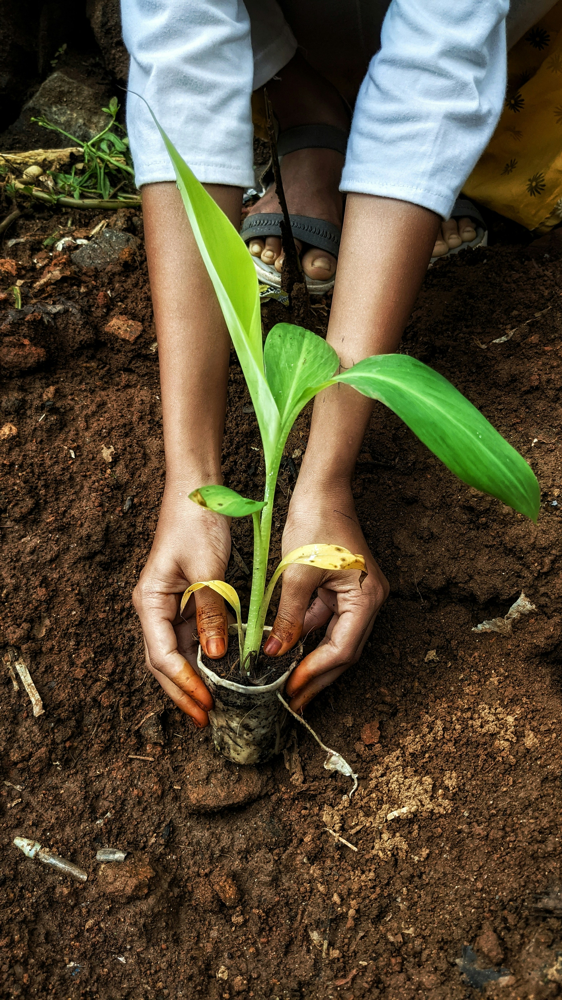

La nostra mission aziendale
Il nostro impegno misurato su tre dimensioni: risultati ambientali, persone e territorio, trasparenza nella gestione.
Scopri i risultatiLa nostra storia
Dalla bonifica delle paludi ferraresi al polo agroindustriale di oggi.
1871
Nasce a Londra la Ferrarese Land Reclamation Company Limited, per bonificare le terre paludose della provincia di Ferrara.
1872
Un regio decreto autorizza l'attività nel Regno d'Italia con il nome di Società per la Bonifica dei Terreni Ferraresi.
1942
La Banca d'Italia acquisisce la maggioranza del capitale sociale.
1947
Le azioni di Bonifiche Ferraresi vengono quotate alla Borsa di Milano.
2014
B.F. S.p.A. rileva da Banca d'Italia la quota di maggioranza e avvia il progetto di polo agroindustriale europeo.
2017
B.F. S.p.A. arriva al 100% di Bonifiche Ferraresi e viene quotata in Borsa.
2023
Aumento di capitale da 300 milioni di euro e prime attività produttive fuori dall'Italia.
ESG
Environmental, Social e Governance sono le tre dimensioni con cui si misura la sostenibilità di un'impresa oltre al bilancio: l'impatto ambientale, il rapporto con le persone e le comunità e il modo in cui l'azienda è governata e controllata.
01 — Environmental
Il Gruppo BF ha consumato 467.564 GJ di energia ed emesso 37.367 tonnellate di CO₂ su più di 7500 acri gestiti, valori quasi triplicati per l'ingresso di nuove società nel perimetro; la quota di rinnovabili è scesa al 2,7%, mentre il fotovoltaico installato copre ormai il 77% del fabbisogno delle società certificate. Il punto più delicato è l'acqua, con il 99,5% dei prelievi in aree a stress idrico, e il fatto che le emissioni della catena del valore non siano ancora calcolate: per questo mancano ancora obiettivi quantitativi di riduzione.
0 GJ
Energia Consumata
0t
Emissioni di CO₂
0acri
Superficie agricola gestita
02 — Social
L'organico è cresciuto del 22% arrivando a 1.107 dipendenti, per l'85% a tempo indeterminato ma con una forte prevalenza maschile (75%, che sale al 92% tra i dirigenti). La formazione è rimasta ferma nonostante la crescita, scendendo a circa 9 ore medie a testa, e gli infortuni sono passati da 8 a 26 — tutti non gravi, nessun decesso né malattia professionale.
0+
Dipendenti del Gruppo
0h
Ore di formazione erogate in media
0%
Presenza femminile in azienda
03 — Governance
Consiglio di undici membri con buon equilibrio di genere (54% uomini, 46% donne) e sostenibilità presidiata dal Comitato Controllo e Rischi con una funzione ESG dedicata; nel 2023 nessun caso di corruzione, contenzioso antitrust o violazione della privacy. Restano due limiti dichiarati: gli stakeholder esterni non sono stati coinvolti nell'analisi di materialità e solo il 24% dei fornitori significativi possiede certificazioni di qualità e sicurezza
0
Membri del Consiglio di Amministrazione
0%
Amministratori indipendenti
0%
Fornitori con codice etico firmato

Documenti
Scarica l'ultimo report di sostenibilità disponibile! (PDF: 2,4 MB).